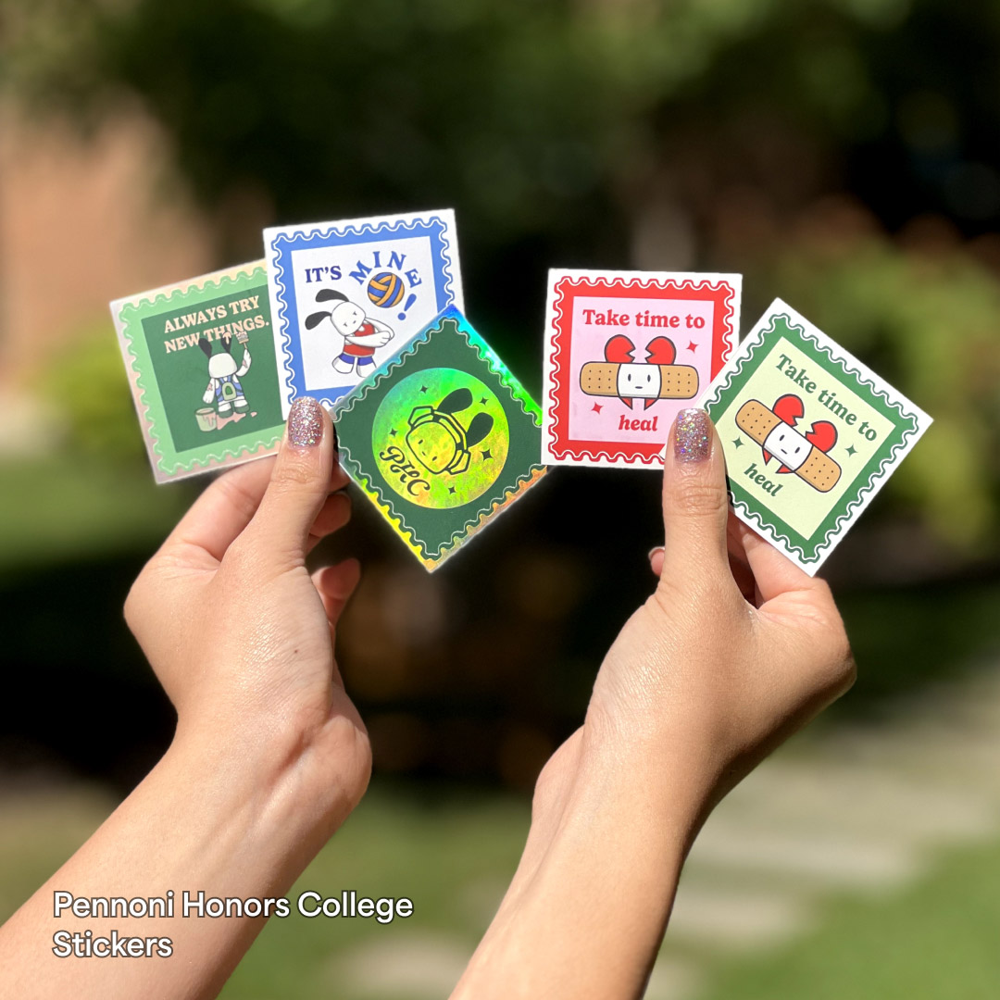

This merchandise was created to welcome incoming freshmen to Pennoni Honors College, fostering a strong connection from the start of their Drexel journey. Distributed free of charge, the designs featured "Onni," a friendly dog character inspired by Drexel campus life and Gen Z trends. Guided by adjectives like relatable, fun, and inclusive, the design emphasizes simplicity and versatility, leaving a lasting impression on students.
